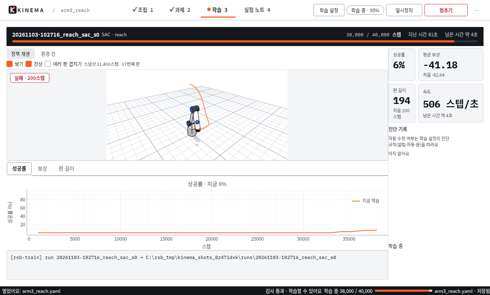
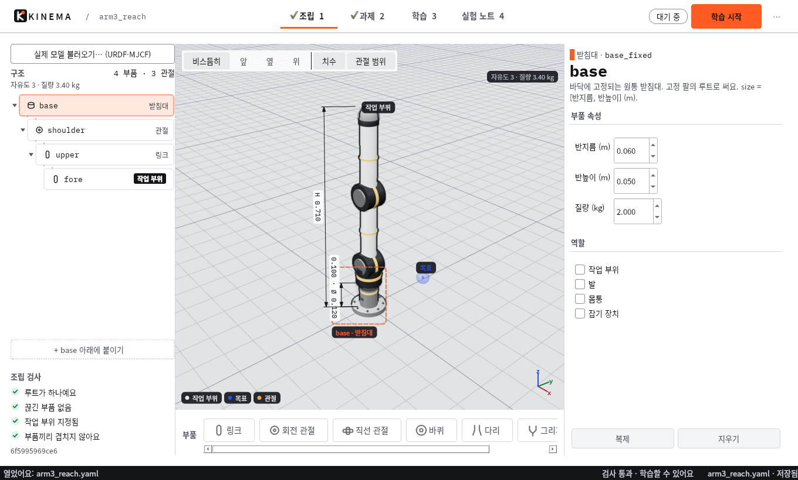

학습하는 동안, 지금 정책이 하는 일을 봐요
숫자 곡선만 보며 기다리지 않아도 돼요. 학습이 돌아가는 동안 지금의 정책이 한 판 하는 모습이 3D로 계속 갱신돼요.

학습 중인 정책이 지금 한 판 하는 모습을 3D로 봐요. 손이 지난 길과 잔상도 보여요.

- 손이 지난 길주황 선과 앞으로 갈 길(점선)이 보여요.
- 지나온 자세 잔상지난 판들을 겹쳐 볼 수 있어요.
- 판 결과"성공, 54스텝" 같은 배지와 스냅샷 시점을 보여 줘요.
- 끄는 스위치느린 PC에서는 "보기"를 끄면 계산이 멈춰요.
학습 결과에는 영향이 없어요. 같은 설정과 시드로 학습하면 재생을 켜도 꺼도 똑같은 결과가 나오는 것을 확인했어요.
네 단계로 이어져요
- 조립링크, 관절, 바퀴, 다리, 그리퍼를 카드로 이어 붙이고 3D에서 바로 확인해요. 잘못 붙이면 이유를 알려 줘요. 코드는 필요 없어요.
- 과제뻗기, 이동, 균형, 걷기, 집기 중에서 무엇을 달성할지 고르고, 목표가 나올 범위를 상자로 정해요.
- 학습버튼 하나로 시작해요. 진행 띠와 곡선, 정책 재생이 실시간으로 움직여요. 일시정지도 되고, 창을 닫아도 학습은 계속돼요.
- 실험 노트실험을 시간순으로 보고, 두 개를 골라 곡선과 바뀐 설정을 비교해요. 메모와 AI 조언도 한 장에 있어요.
직접 짜고 뒤지던 일을 버튼으로
| 하고 싶은 일 | 보통은 | Kinema이면 |
|---|---|---|
| 로봇 만들기 | URDF, XML을 직접 작성 | 부품 카드로 조립, 3D로 바로 확인 |
| 과제 정하기 | 환경 코드를 직접 수정 | 과제를 고르고 목표 범위를 상자로 지정 |
| 학습 시작 | 스크립트 작성, 명령 실행 | 시작 버튼 하나 |
| 진행 확인 | TensorBoard를 따로 띄우기 | 진행 띠, 곡선, 정책 재생(3D) |
| 학습이 막혔을 때 | 로그를 읽고 감으로 조정 | 원인 후보 알림과 안전한 자동 조정 |
| 학습 비교 | 로그 폴더를 직접 뒤지기 | 실험 노트에서 겹쳐 보고 설정 차이 확인 |
필요한 건 다 들어 있어요
- 부품 5종 이상
- 링크, 관절 모듈, 바퀴, 다리, 그리퍼, 몸체. 부품마다 크기, 질량, 역할을 정해요. URDF, MJCF 파일도 불러와요.
- 조립 검사
- 끊긴 부품, 빠진 역할 같은 문제를 학습 전에 알려 줘요.
- 알고리즘 3종
- SAC, PPO, TD3. 병렬 환경으로 CPU에서 돌려요. 학습률을 일정하게 둘지 줄여 갈지 골라요.
- 이어서 학습
- 끝난 학습의 두뇌에서 이어 학습해요. 구조가 다르면 이유를 알려 줘요.
- 자동 진단
- 학습이 막히면 원인 후보를 알려 주고, 안전한 것은 스스로 고쳐요.
- 내 PC에 저장
- 모든 기록은
문서\Kinema에 저장돼요. 제거해도 남아요.
"왜 학습이 안 되죠?"를 AI에게 물어보세요
이 기능은 선택이에요. 실험 노트에서 실험을 고르고 AI 조언 받기를 누르면, 분석가 2명이 따로 기록을 보고 의견이 같은 것만 설정 제안으로 보여 줘요.
성공률이 40000스텝까지 0%예요. 뭘 바꾸면 돼요?
두 분석이 같은 원인을 짚었어요. 제안 1건. 새 설정 파일로만 적용되고, 학습은 자동으로 시작하지 않아요.
본인의 Anthropic API 키가 필요해요. 호출 전에 예상 비용(한 번에 약 $0.1~0.3)을 보여 준 뒤 확인을 받아요.
키는 Windows 자격 증명 관리자에 저장하고 파일에는 쓰지 않아요.
내 PC 안에서 돌아요
- 조립, 학습, 재생은 모두 이 PC에서 돌아요. 인터넷은 AI 조언을 쓸 때만 써요.
- 보내는 것은 요약만AI 조언을 쓸 때 학습 설정과 지표 요약만 Anthropic으로 가요. 파일 경로와 API 키는 보내지 않아요.
- 자동으로 하지 않아요조언은 참고용이에요. 적용도, 학습 시작도 내가 눌러야만 돼요.
- 제거해도 기록은 남아요학습 기록은
문서\Kinema에 그대로 있어요.
설치파일 하나로 끝나요
| 필요한 것 | Windows 10 또는 11, 64비트 |
|---|---|
| 권장 | 메모리 8 GB 이상, 디스크 약 1 GB |
| GPU | 필요 없어요. 3D가 안 되는 PC는 소프트웨어 방식으로 자동 전환해요. |
- 내려받기다운로드를 눌러
Kinema-Setup.exe를 받아요. - 설치더블클릭해서 설치해요. 관리자 권한은 필요 없어요. "알 수 없는 게시자" 경고가 뜨면 추가 정보를 누르고 실행을 눌러요.
- 열기시작 메뉴에서 Kinema를 열어요. 시작 화면의 틀 카드(고정 팔, 바퀴 로봇, 4족 보행)로 바로 시작해요.
제거하려면 설정 > 앱에서 Kinema를 지워요. 학습 기록(문서\Kinema)은 남아요. 예전 버전(CAPEK)이 만든 문서\CAPEK 폴더가 있으면 Kinema가 그대로 이어서 써요. 코드 서명이 아직 없어 첫 실행에 경고가 뜰 수 있고, 일부 백신이 새 프로그램을 의심할 수 있어요.
잘 안 될 때
설치할 때 "알 수 없는 게시자" 경고가 떠요
코드 서명이 아직 없어서 나오는 정상 경고예요. 추가 정보를 누르고 실행을 누르면 설치돼요. "앱 제어 정책이 차단했다"는 창이 뜨면 이슈에 화면 문구를 남겨 주세요.
3D 화면이 안 나와요
GPU가 없거나 드라이버 문제일 때 소프트웨어 방식으로 자동 전환해요. 그래도 안 나오면 문서\Kinema\logs\gui.log를 이슈에 붙여 주세요. 학습은 3D 없이도 돌아요.
학습이 너무 느려요
학습은 CPU로 해요. 다른 프로그램이 CPU를 많이 쓰면 몇 배 느려질 수 있어요. 학습 설정에서 병렬 환경 수를 줄이거나 학습 스텝을 줄이고, 정책 재생의 "보기"를 꺼 보세요.
기록은 어디에 저장되나요
문서\Kinema 폴더예요. runs\(학습 기록과 두뇌), my_configs\(내가 저장한 설정), logs\(로그). 폴더를 바꾸려면 환경변수 KINEMA_DATA_DIR을 설정해요.
AI 조언 키는 어떻게 넣나요
실험 노트에서 AI 조언 받기를 눌러 안내를 읽고 동의한 뒤 키를 입력해요. 키는 Windows 자격 증명 관리자에 저장되고 파일에는 남지 않아요.
예전 버전 받기
- 목록을 불러오는 중이에요.
로봇 학습,
오늘부터 한 앱에서
개인, 교육, 연구 목적이라면 무료예요.